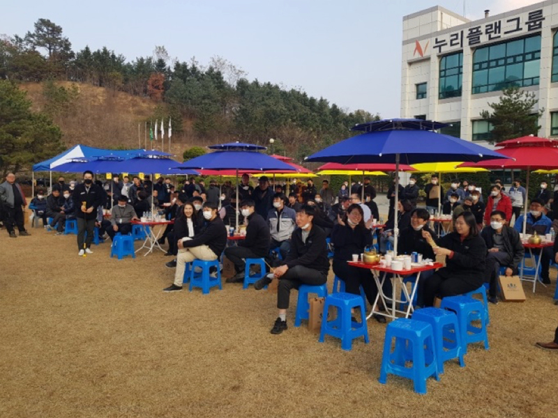
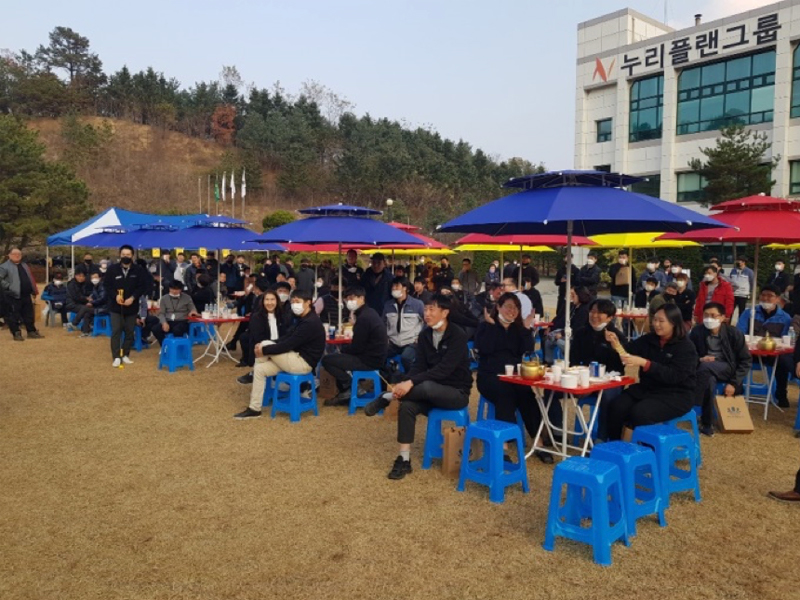

SUSTAINABILITY
지속가능경영
SCROLL
환경경영
누리플랜그룹은 지속가능한 사회를 위해 환경적 측면에서의 리스크 대응 역량을 강화하여 녹색 경영을 추구합니다.

친환경 녹색경영 방침
- 환경 관련된 제반 법규를 준수하며, 기업 활동 전반에 걸쳐 환경 보전 활동을 전개합니다.
- 환경오염 예방, 에너지 효율 개선, 자원 재활용 등 환경 보호에 힘쓰고 있습니다.
- 사업장 및 지역사회의 환경 개선을 위해 지속적인 환경투자를 실시하고 있습니다.
- 기후변화에 대응한 혁신기술을 개발하여 환경오염물질 배출을 최소화하고, 자원과 에너지를 효율적으로 사용합니다.
- ISO 14001을 기반으로 정기적으로 평가, 분석할 수 있는 환경모니터링 체계를 구축하여 방침, 목표, 성과를 지속적으로 관리합니다.
사회공헌
누리플랜그룹은 더 나은 내일을 위해 함께하는 세상을 만듭니다. 창립이래 사업장 인근의 지역사회와 함께하며 기업의 사회적 책임을 다하고 있습니다.
 

누리플랜그룹은 사회공헌 활동의 일환으로 바자회를 통해 얻은 수익금을 지역사회에 기부하여 나눔 활동에 동참하고 있습니다.

누리플랜그룹은 환경재단의 어린이환경센터에서 주최하는 아동 지원 관련 환경보건 사업에 기부하여 뜻을 함께 하고 있습니다.

누리플랜그룹은 우수인재 양성에 진력하는 대학 시스템 구축을 위해 성균관대학교 및 중부대학교 발전기금을 기탁하여 사회 발전에 기여하고 있습니다.